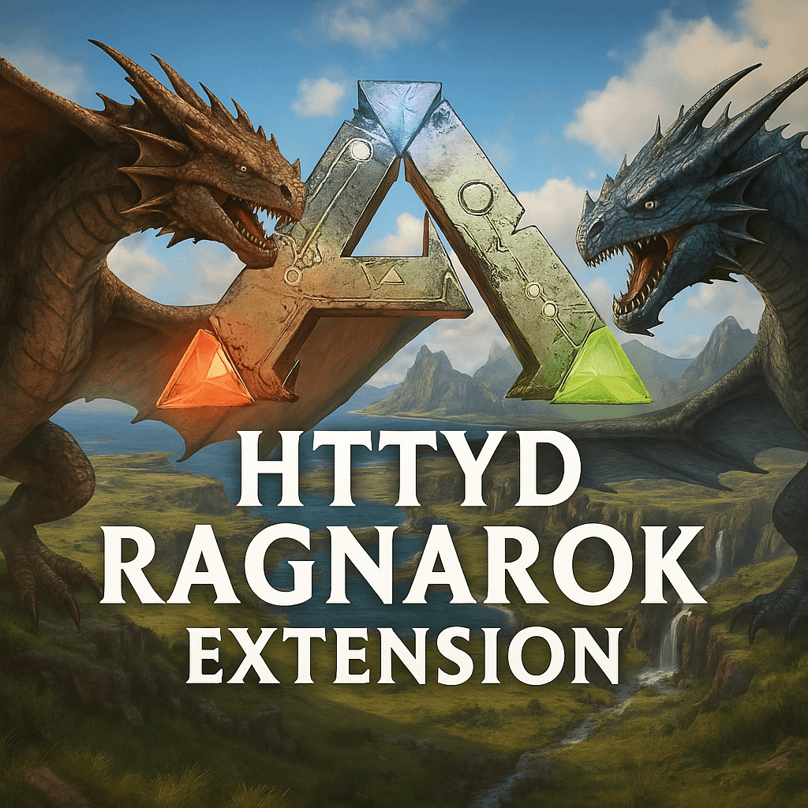

The Lost Forge Mods
Explore powerful modifications created by our community.
Furys Reach
New swords and axes infused with elemental magic. Includes fire, frost, and void damage types.
View on SteamFurys Reach UI
Collect and activate scattered runes to unlock hidden powers and lore-based buffs.
View on SteamFurys Reach Dossiers
This mod adds all the important dossiers from the "How to Train Your Dragon" universe. You can find information about all the dragons and their special features.
View on Steam

Dossiers Extension
An expansion for the Ragnarok map that adds additional Dragon Dossiers
View on Steam